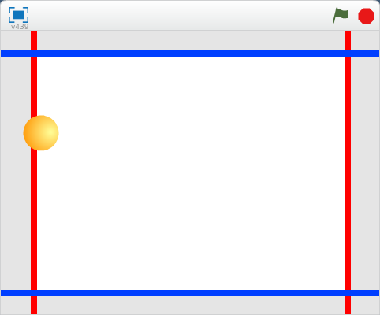

Contents
Introduction
This Scratch extension provides you with a set of blocks you can use to generate your own tones!
With blocks to change the tone frequency, effects, and ocsillator type, this extension gives you all the tools you need to create your own interactive music project!
Tone.js and the Web Audio API are used to power this extension.
Bouncing Synth Ball available in the Example Projects
Getting Started
The Web Audio API is not supported by Internet Explorer at this time.
Google Chrome, Firefox, and Safari web browsers should all work with this extension.
Launch the tone synth extension on ScratchX.
Scratch Blocks
Turn the tone on for a specified number of seconds.
Turn the tone on for a specified number of seconds. Wait until the tone is complete before going on to the next block.
Turn the tone on.
Turn the tone off.
Change note (MIDI Key) or frequency (Hz) by a specified number.
Switch tone between note (MIDI Key) and frequency (Hz).
Set tone effect (echo, wah, pan left/right, volume) to a value between 0 and 100%.
Change tone effect (echo, wah, pan left/right, volume) to a value between 0 and 100%.
Clear all synth effects.
Create an echo delay for a specified number of seconds.
Change the oscillator waveform between sine, triangle, square, sawtooth, and pwm.
Example Projects
- Bouncing Synth Ball
- When the ball crosses the red or blue lines the oscillator turns on and changes frequencies.
- Synth Test
- Example project demonstrating of the capabilities of the synth extension.